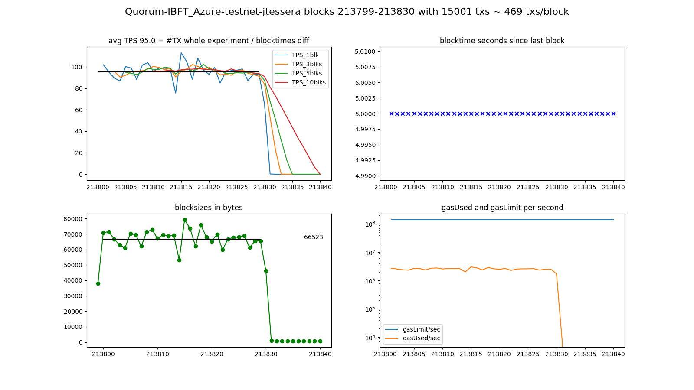

(Quorum-IBFT_Azure-testnet-jtessera) Quorum v1.8.12 with 15000 txs: 95.0 TPS
information:
NODE: Geth/v1.8.12-stable/linux-amd64/go1.10.8 on https://jtessera.blockchain.azure.com:3200/fqlf6UcrcBJPQjoX5RkAx3Nv
consensus=istanbul chain_name=??? chain_id=-1 network_id=1337
SEND: 15000 transactions in blocks 213799-213830 with 10 empty blocks following.
A sample of transactions looked as if they: succeeded.
TPS: The stopclock watcher measured a final TPS of 87.8 since contract deploy,
and in between saw values as high as 88.2 TPS.
DIAG: The whole experiment was prefixed 'Quorum-IBFT_Azure-testnet-jtessera'.
The diagrams were saved into 'img/Quorum-IBFT_Azure-testnet-jtessera-20190410-1800_blks213799-213830.png'.
Looking only at the experiment block-timestamps, the overall TPS was ~95.0.
log:
versions: web3 4.8.2, py-solc: 3.2.0, solc 0.4.25+commit.59dbf8f1.Linux.gpp, testrpc 1.3.5, python 3.5.3 (default, Sep 27 2018, 17:25:39) [GCC 6.3.0 20170516]
web3 connection established, blockNumber = 213792, node version string = Geth/v1.8.12-stable/linux-amd64/go1.10.8
first account of node is 0xB7835952fbb3340A449494Ba2e6820eAffcb1220, balance is 0 Ether
nodeName: Quorum, nodeType: Geth, nodeVersion: v1.8.12-stable, consensus: istanbul, network: 1337, chainName: ???, chainId: -1
Block 213793 - waiting for something to happen
(filedate 1554910551) last contract address: 0x7C76D72dAe87aCdb186a6b4F348157676D50E4D1
(filedate 1554912011) new contract address: 0xFE9ff592ad479C95916C1745cAf042D7Abe41B65
blocknumber_start_here = 213796
starting timer, at block 213796 which has 1 transactions; at epochtime 1554912011.7372758
block 213797 | new #TX 0 / 5000 ms = 0.0 TPS_current | total: #TX 1 / 5.3 s = 0.2 TPS_average (peak is 0.2 TPS_average)
block 213798 | new #TX 0 / 5000 ms = 0.0 TPS_current | total: #TX 1 / 10.4 s = 0.1 TPS_average (peak is 0.1 TPS_average)
block 213799 | new #TX 268 / 5000 ms = 53.6 TPS_current | total: #TX 269 / 15.6 s = 17.2 TPS_average (peak is 17.2 TPS_average)
block 213800 | new #TX 505 / 5000 ms = 101.0 TPS_current | total: #TX 774 / 21.1 s = 36.6 TPS_average (peak is 36.6 TPS_average)
block 213801 | new #TX 509 / 5000 ms = 101.8 TPS_current | total: #TX 1283 / 26.1 s = 49.2 TPS_average (peak is 49.2 TPS_average)
block 213802 | new #TX 475 / 5000 ms = 95.0 TPS_current | total: #TX 1758 / 31.5 s = 55.9 TPS_average (peak is 55.9 TPS_average)
block 213803 | new #TX 447 / 5000 ms = 89.4 TPS_current | total: #TX 2205 / 36.5 s = 60.4 TPS_average (peak is 60.4 TPS_average)
block 213804 | new #TX 434 / 5000 ms = 86.8 TPS_current | total: #TX 2639 / 41.3 s = 63.9 TPS_average (peak is 63.9 TPS_average)
block 213805 | new #TX 501 / 5000 ms = 100.2 TPS_current | total: #TX 3140 / 46.5 s = 67.6 TPS_average (peak is 67.6 TPS_average)
block 213806 | new #TX 494 / 5000 ms = 98.8 TPS_current | total: #TX 3634 / 51.7 s = 70.3 TPS_average (peak is 70.3 TPS_average)
block 213807 | new #TX 441 / 5000 ms = 88.2 TPS_current | total: #TX 4075 / 56.1 s = 72.6 TPS_average (peak is 72.6 TPS_average)
block 213808 | new #TX 508 / 5000 ms = 101.6 TPS_current | total: #TX 4583 / 61.4 s = 74.6 TPS_average (peak is 74.6 TPS_average)
block 213809 | new #TX 519 / 5000 ms = 103.8 TPS_current | total: #TX 5102 / 67.6 s = 75.5 TPS_average (peak is 75.5 TPS_average)
block 213810 | new #TX 478 / 5000 ms = 95.6 TPS_current | total: #TX 5580 / 71.7 s = 77.9 TPS_average (peak is 77.9 TPS_average)
block 213811 | new #TX 494 / 5000 ms = 98.8 TPS_current | total: #TX 6074 / 76.6 s = 79.3 TPS_average (peak is 79.3 TPS_average)
block 213812 | new #TX 489 / 5000 ms = 97.8 TPS_current | total: #TX 6563 / 81.1 s = 81.0 TPS_average (peak is 81.0 TPS_average)
block 213813 | new #TX 492 / 5000 ms = 98.4 TPS_current | total: #TX 7055 / 86.8 s = 81.3 TPS_average (peak is 81.3 TPS_average)
block 213814 | new #TX 378 / 5000 ms = 75.6 TPS_current | total: #TX 7433 / 91.3 s = 81.4 TPS_average (peak is 81.4 TPS_average)
block 213815 | new #TX 565 / 5000 ms = 113.0 TPS_current | total: #TX 7998 / 97.2 s = 82.3 TPS_average (peak is 82.3 TPS_average)
block 213816 | new #TX 524 / 5000 ms = 104.8 TPS_current | total: #TX 8522 / 101.6 s = 83.9 TPS_average (peak is 83.9 TPS_average)
block 213817 | new #TX 442 / 5000 ms = 88.4 TPS_current | total: #TX 8964 / 106.3 s = 84.3 TPS_average (peak is 84.3 TPS_average)
block 213818 | new #TX 540 / 5000 ms = 108.0 TPS_current | total: #TX 9504 / 111.4 s = 85.3 TPS_average (peak is 85.3 TPS_average)
block 213819 | new #TX 485 / 5000 ms = 97.0 TPS_current | total: #TX 9989 / 116.2 s = 85.9 TPS_average (peak is 85.9 TPS_average)
block 213820 | new #TX 465 / 5000 ms = 93.0 TPS_current | total: #TX 10454 / 121.1 s = 86.3 TPS_average (peak is 86.3 TPS_average)
block 213821 | new #TX 497 / 5000 ms = 99.4 TPS_current | total: #TX 10951 / 126.5 s = 86.6 TPS_average (peak is 86.6 TPS_average)
block 213822 | new #TX 425 / 5000 ms = 85.0 TPS_current | total: #TX 11376 / 131.3 s = 86.7 TPS_average (peak is 86.7 TPS_average)
block 213823 | new #TX 475 / 5000 ms = 95.0 TPS_current | total: #TX 11851 / 136.1 s = 87.1 TPS_average (peak is 87.1 TPS_average)
block 213824 | new #TX 482 / 5000 ms = 96.4 TPS_current | total: #TX 12333 / 141.2 s = 87.3 TPS_average (peak is 87.3 TPS_average)
block 213825 | new #TX 484 / 5000 ms = 96.8 TPS_current | total: #TX 12817 / 147.5 s = 86.9 TPS_average (peak was 87.3 TPS_average)
block 213826 | new #TX 490 / 5000 ms = 98.0 TPS_current | total: #TX 13307 / 151.6 s = 87.8 TPS_average (peak is 87.8 TPS_average)
block 213827 | new #TX 436 / 5000 ms = 87.2 TPS_current | total: #TX 13743 / 156.7 s = 87.7 TPS_average (peak was 87.8 TPS_average)
block 213828 | new #TX 466 / 5000 ms = 93.2 TPS_current | total: #TX 14209 / 161.1 s = 88.2 TPS_average (peak is 88.2 TPS_average)
block 213829 | new #TX 466 / 5000 ms = 93.2 TPS_current | total: #TX 14675 / 166.3 s = 88.2 TPS_average (peak is 88.2 TPS_average)
block 213830 | new #TX 326 / 5000 ms = 65.2 TPS_current | total: #TX 15001 / 170.9 s = 87.8 TPS_average (peak was 88.2 TPS_average)
block 213831 | new #TX 1 / 5000 ms = 0.2 TPS_current | total: #TX 15002 / 175.6 s = 85.4 TPS_average (peak was 88.2 TPS_average)
block 213832 | new #TX 0 / 5000 ms = 0.0 TPS_current | total: #TX 15002 / 180.4 s = 83.2 TPS_average (peak was 88.2 TPS_average)
block 213833 | new #TX 0 / 5000 ms = 0.0 TPS_current | total: #TX 15002 / 185.0 s = 81.1 TPS_average (peak was 88.2 TPS_average)
block 213834 | new #TX 0 / 5000 ms = 0.0 TPS_current | total: #TX 15002 / 190.3 s = 78.8 TPS_average (peak was 88.2 TPS_average)
block 213835 | new #TX 0 / 5000 ms = 0.0 TPS_current | total: #TX 15002 / 195.4 s = 76.8 TPS_average (peak was 88.2 TPS_average)
block 213836 | new #TX 0 / 5000 ms = 0.0 TPS_current | total: #TX 15002 / 200.1 s = 75.0 TPS_average (peak was 88.2 TPS_average)
block 213837 | new #TX 0 / 5000 ms = 0.0 TPS_current | total: #TX 15002 / 205.0 s = 73.2 TPS_average (peak was 88.2 TPS_average)
block 213838 | new #TX 0 / 5000 ms = 0.0 TPS_current | total: #TX 15002 / 210.3 s = 71.4 TPS_average (peak was 88.2 TPS_average)
block 213839 | new #TX 0 / 5000 ms = 0.0 TPS_current | total: #TX 15002 / 215.5 s = 69.6 TPS_average (peak was 88.2 TPS_average)
block 213840 | new #TX 0 / 5000 ms = 0.0 TPS_current | total: #TX 15002 / 220.0 s = 68.2 TPS_average (peak was 88.2 TPS_average)
block 213841 | new #TX 0 / 5000 ms = 0.0 TPS_current | total: #TX 15002 / 225.2 s = 66.6 TPS_average (peak was 88.2 TPS_average)
Received signal from send.py = updated INFOFILE.
Experiment ended! Current blocknumber = 213841
Updated info file: last-experiment.json THE END.
diagrams:
img/Quorum-IBFT_Azure-testnet-jtessera-20190410-1800_blks213799-213830.png

info raw
{'diagrams': {'blocktimestampsTpsAv': 95.04516129032258,
'filename': 'img/Quorum-IBFT_Azure-testnet-jtessera-20190410-1800_blks213799-213830.png',
'prefix': 'Quorum-IBFT_Azure-testnet-jtessera'},
'node': {'chain_id': -1,
'chain_name': '???',
'consensus': 'istanbul',
'name': 'Quorum',
'network_id': 1337,
'rpc_address': 'https://jtessera.blockchain.azure.com:3200/fqlf6UcrcBJPQjoX5RkAx3Nv',
'type': 'Geth',
'version': 'v1.8.12-stable',
'web3.version.node': 'Geth/v1.8.12-stable/linux-amd64/go1.10.8'},
'send': {'block_first': 213799,
'block_last': 213830,
'empty_blocks': 10,
'num_txs': 15000,
'sample_txs_successful': True},
'tps': {'finalTpsAv': 87.76165110206,
'peakTpsAv': 88.22631017031662,
'start_epochtime': 1554912011.7372758}}